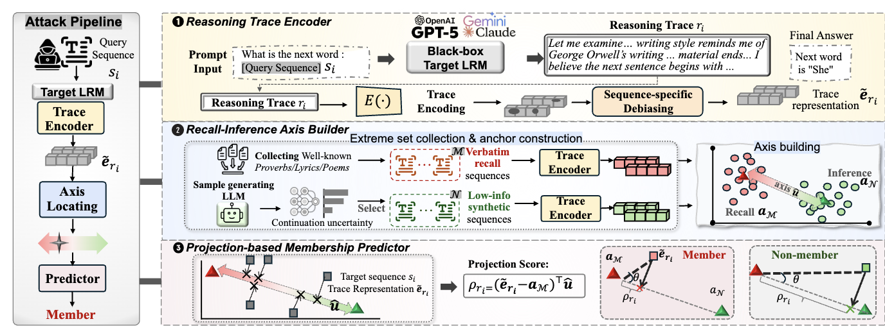
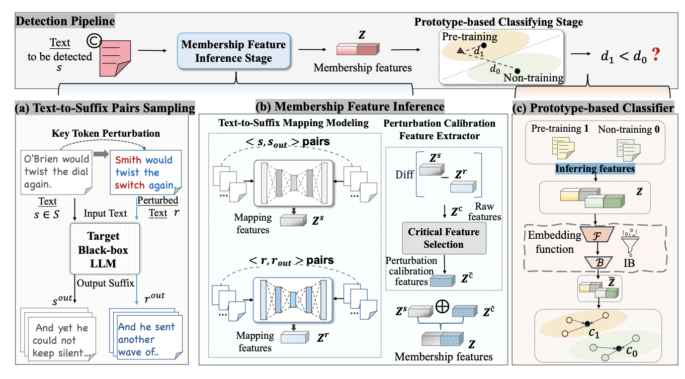
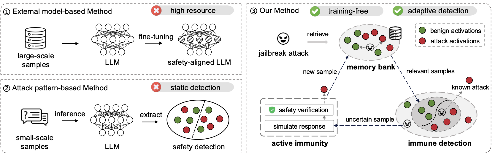

Publications
A short selection of recent work on privacy and security for large language models.
Selected Publications

When Reasoning Leaks Membership: Membership Inference Attack on Black-box Large Reasoning Models
This work introduces BlackSpectrum, the first membership inference attack framework for black-box large reasoning models. It shows that exposed reasoning traces can leak strong membership signals and substantially increase privacy risk.

Automated Detection of Pre-training Text in Black-box Large Language Models
This paper proposes VeilProbe, an automated black-box auditing framework for detecting whether candidate passages appeared in LLM pre-training corpora. It improves scalability and stability without relying on manual prompt engineering.

From static to adaptive: immune memory-based jailbreak detection for large language models
This work presents a multi-agent adaptive guard for jailbreak detection. Inspired by immune memory, it retrieves relevant historical patterns and combines memory matching with response simulation to better detect evolving attacks.